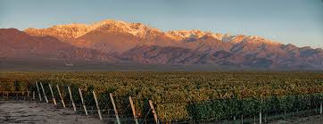
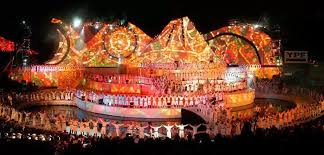
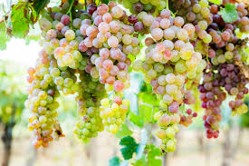
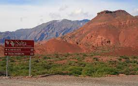
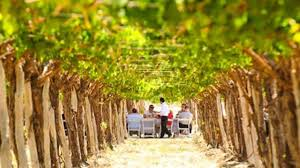

Nuestras Vids
Mendoza

Mendoza produce más del 78 % del vino argentino
La vitivinicultura genera más de 106.000 puestos de trabajo directos. El complejo vitivinícola es una de las 10 principales cadenas exportadoras del país.
Es protagonista en la industria del vino a escala nacional. Concentra más del 70% de la superficie implantada del país, supera el 68 % de la producción de uva, reúne más del 78 % en la elaboración del vino y más del 52% en mosto. También en tierra mendocina se ubican la mayoría de las bodegas de la Argentina.
De los 17.011 productores del territorio nacional, 10.974 se encuentran en Mendoza. El Observatorio Vitivinícola Argentino (OVA) y la Organización Internacional de la Viña y el Vino (OIV) indican que nuestro país es la 7ª superficie mundial -con 219 millones de hectáreas-, 5° productor -14,5 millones de hectolitros-, 9° consumidor mundial -8,4 millones de hectolitros- y además es el 10° exportador, con 2,8 millones.
La vitivinicultura genera más de 106.000 puestos de trabajo directos y 280.000 indirectos.
El complejo vitivinícola es una de las 10 principales cadenas exportadoras, junto son casi 500 exportadores que llegan con sus vinos a 127 países
FIESTA NACIONAL DE LA VENDIMIA
La Fiesta Nacional de la Vendimia es una de las festividades populares más importantes del planeta.
Reúne la cultura, la tradición y la vanguardia y, con los años, se ha convertido en uno de los principales atractivos turísticos de la provincia de Mendoza.
Durante 3 noches mágicas en el Teatro Griego Frank Romero Day. Es una ventana que nos muestra al mundo, con nuestra capacidad de crecer y el talento de nuestros referentes culturales.
Cada año, desde las viñas y las calles de nuestras ciudades, se renueva la esperanza de los hombres y mujeres de esta tierra, que, este año, vuelve como un Milagro del vino nuevo.
El guión que se desplegará este año es una poesía que fluye, emulando el agua y las otras fuerzas de la naturaleza.
Se expresa en múltiples voces como lo diverso y plural de la existencia. Es la voz de la vida y su devenir. Somos las partes pero somos una unidad. Nos hermana el hálito vital. El ser árbol, manos, sueños.
Somos viñas, sol de otoños y cosechas.

¡Cada día es un milagro!
Y la vida-milagro es arte, memoria, trabajo y fiesta.
Es la tierra que gira, la luz que canta y todo lo que danza. Es el vino de la esperanza, la alegría y la fiesta.
Nuestros héroes, el que con sus manos cultiva la tierra, la que sostiene los hijos, los que liberaron patrias, los y las que conquistan derechos, aprendieron de los ríos.
En ellos se miraron San Martín, Bolívar, Juana, Manuela… Y vos, el luchador de hoy.
Es correntada que no se fatiga.
Soy, somos,el júbilo y la adversidad. Soy, somos, todo lo que nos constituye.
Creemos que, en esta primera Vendimia del reencuentro, recibimos las miradas y las emociones como seres con conciencia de la finitud y buscando mitigar las ausencias con la afirmación de la vida.
Parte que vuelve a reunirse, a congregarse, a sumar nuevamente después de tanto espacio, tanto silencio y tanta distancia.
Este vino,esta gente y este brindis es lo que Mendoza puede ofrecer al mundo.
https://vendimia.mendoza.gov.ar/
San Juan

Dejate llevar por el incomparable sabor de los vinos sanjuaninos a través de un recorrido enoturístico que marida muy bien con los paisajes inigualables. La industria del vino en San Juan está muy desarrollada y podés disfrutarla en toda la Provincia.
Además de excelentes vinos, San Juan se destaca por la producción de uva de mesa y pasas. Y de esta actividad surgen expresiones artísticas e históricas que pueden apreciarse en galerías y museos.
¿Te animás a una degustación? Una amplia gama de varietales que producimos en nuestras bodegas te van a introducir en un mundo de sabores complejos y que enamoran. Conocé todo el proceso de elaboración desde la vid hasta la botella.
Podés realizar recorridos guiados por antiguas y modernas bodegas equipadas con maquinarias de última generación, tanques de acero inoxidable, refrigeración computarizada y barricas de roble.
Escuchá las mejores recomendaciones de la voz de reconocidos enólogos y combiná toda la experiencia con el mejor alojamiento y gastronomía que ofrecen algunas de las mejores bodegas ubicadas en la Ruta del Vino de San Juan.
Salta
  
Pocos lugares en el mundo sorprenden como esta Ruta del Vino. La variedad de colores en sus montañas, los pueblos típicos y la calidez de su gente transforman a este lugar en algo mágico. Atraviesa lugares con paisajes muy llamativos como los de la Quebrada de las Flechas, Quebrada de las Conchas y pueblos centenarios como Molinos, San Carlos, Seclantás y Cachi con una enorme riqueza cultural que se expresa en la música y las artesanías.
A través de la Ruta Nacional N°68 y la famosa Ruta Nacional N°40 se puede degustar los vinos más altos del mundo y probar las diferentes variedades que ofrecen las bodegas salteñas. Es la ruta del vino más alta del mundo, se encuentra en los Valles Calchaquíes y es el área de producción de vinos más importante de Salta. Presenta un clima seco y templado, óptimo para el cultivo y producción del Torrontés y otras cepas como el Cabernet Sauvignon, Malbec, Tannat, Bonarda, Syrah, Barbera y Tempranillo.
Las características geográfi¬cas y el clima le conceden al vino de la zona un gran carácter, fuerte personalidad y alta calidad con fragancias, coloridos y sabores únicos, siendo por esto reconocidos y premiados a nivel mundial. A través de esta ruta y todas sus bodegas puede conocerse, apreciarse y degustarse todas las cualidades del vino de altura.
En la actualidad se exportan desde la provincia de Salta 1.200.000 botellas de vinos premium a 30 países de todo el mundo por lo que actualmente Salta es uno de los destinos preferidos de la Argentina en enoturismo. Modernas bodegas equipadas con nueva tecnología han incorporado nuevos servicios para los turistas, que varían desde las tradicionales visitas guiadas por las plantas de producción y los viñedos hasta alojamiento en estancias con un muy alto nivel de servicios. Se destaca también en esta ruta el Museo de la Vid y el Vino en Cafayate y la presencia de Bodegas de Vinos Artesanales que le otorgan un plus al sabor del Valle.
El Vino Torrontés
Este vino es la conjunción perfecta entre la inspiración y la obra del hombre, el suelo y el clima de su lugar de origen. Los valles cuentan con terruños muy especiales que, gracias a sus excelentes condiciones (altura, suelo, humedad, amplitud térmica, etc.) aportan atributos típicos y diferenciales. Esta combinación de factores es ideal para el desarrollo de la cepa torrontés de sabor dulce, profundo y frutado, que ha sabido ganar innumerables medallas de oro y plata en certámenes internacionales.Características del torrontés
- Olfato: Los aromas característicos del Torrontés recuerdan a rosas, duraznos blancos y siempre se encuentran presente el aroma a la uva torrontés.
- Sabores: A la boca el Torrontés tiene presente los sabores a cáscara de naranja, duraznos blancos, ensalada de frutas, hacen que el mismo aparezca como un vino dulce pero en realidad es un magnífico vino seco.
- Comidas: El Torrontés es ideal para acompañar entradas, mariscos, sushi, cocina fusión, platos thai picantes, empanadas salteñas, locro norteño, como aperitivo.
http://turismosalta.gov.ar/